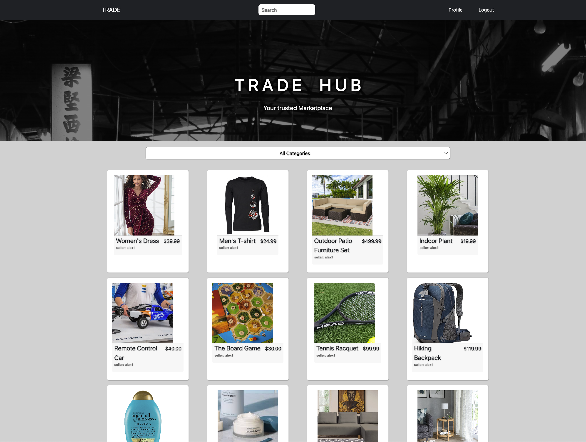
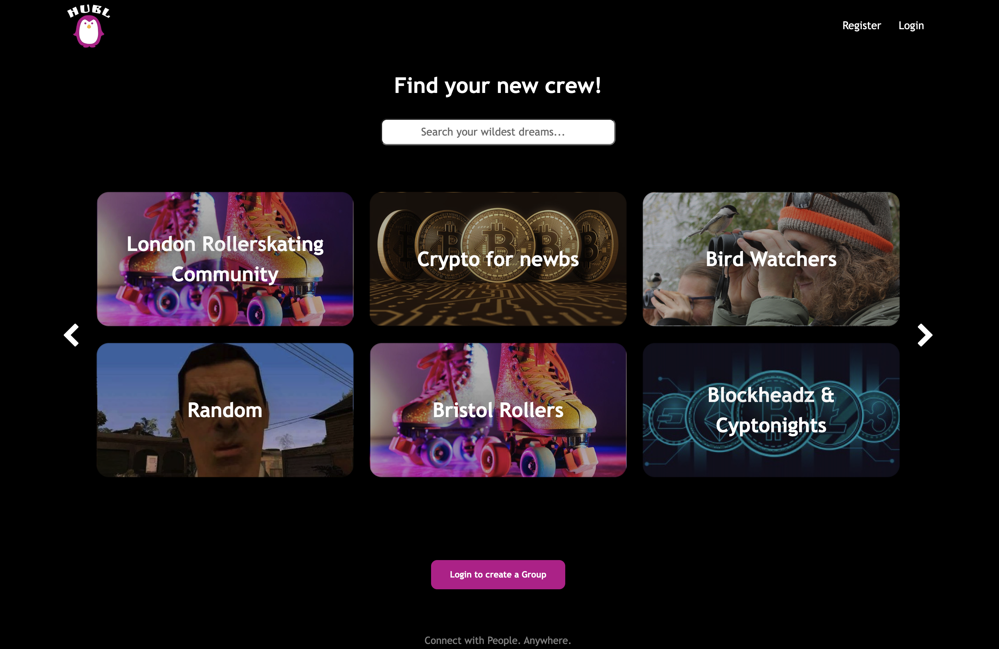
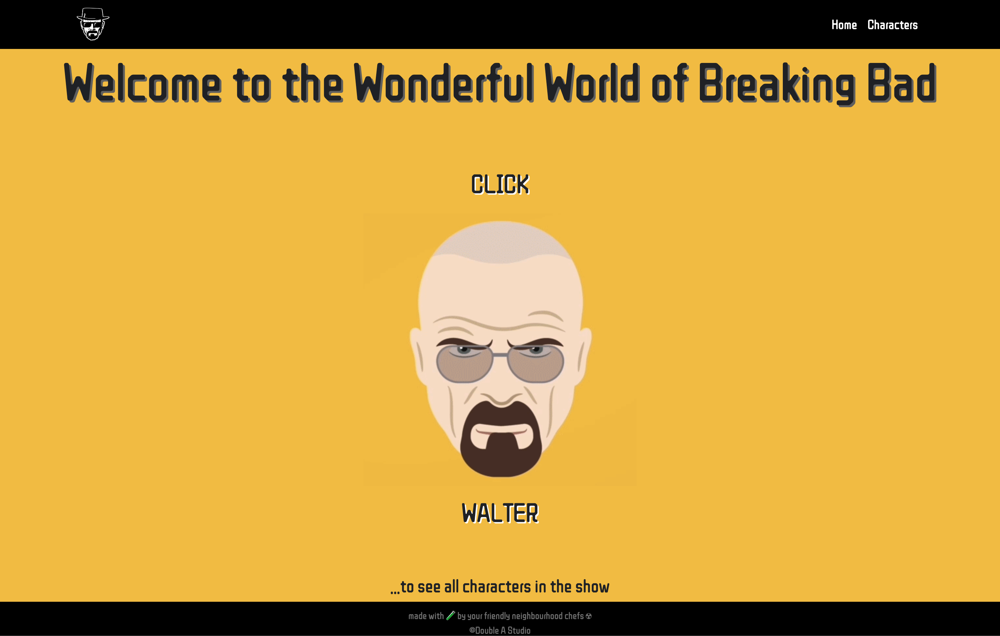
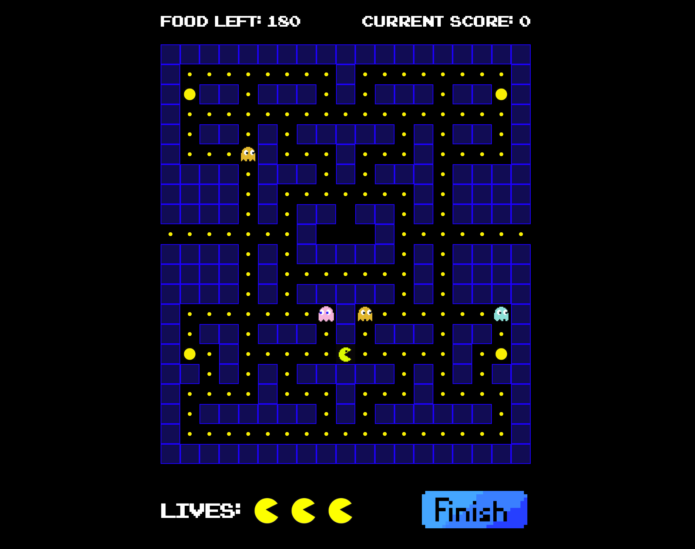

About Me
I had the incredible chance to collaborate with two friends to create a music-blog, giving me the
perfect opportunity to learn about the fundamentals of simple website building and maintenance. This served
as a crucial stepping stone later in my journey to become a software engineer and further ignited my passion
to
learn.
After graduating with an International Management degree and gaining experience in various jobs, I was
fortunate to be
employed as a workforce
coordinator in the customer service department of a cryptocurrency exchange. This adventure gave me a
comprehensive insight into blockchain technology and how an online business operates.
These events motivated me to pursue a career in software engineering and build upon the knowledge I had
acquired. I am eager to continue learning and pushing my career to the next level, and I'm thrilled to
contribute my enthusiasm, creativity and ambition to the world of software engineering.

Full-stack application built with JavaScript, React, Python, Django REST Framework. The project represents
a peer-to-peer marketplace where users can register, buy and sell items as well as a working gamified
payment system. The application has multiple relationships and CRUD functionality.

Full-stack application built with JavaScript, React, Node.js, Express, and MongoDB. HUBL is a social
platform that allows users to search or create groups of interest. My responsibilities for this project
included:
account registration and authentication, creation of the landing page which consisted of the group index. A
personal win for me here was to successfully implement a way to only show six groups at once, and the
ability to flip through pages to see further groups.

Front-end application built with JavaScript, React, Bootstrap and Axios. It uses three public APIs to fetch
data and consists of functionalities such as a search bar, various filters, a nav-bar for quick access and a
button on each character's page that pulls quotes from a separate API. My role in this group was to create
the character index page while my partner focused on the individual character pages. However, due to good
work synergy and communication, we ended up working very closely together on all topics.

Front-end application that mimics the classic arcade game “Pac-Man”. It was built with HTML, CSS and
JavaScript using DOM Manipulation.
Interests
As a new software engineer, I am eager to explore the possibilities of web3 and blockchain technology. I
look forward to learning more about this cutting-edge technology and how it can be used to create
innovative and secure applications that can revolutionize our digital world.
I also enjoy skiing as a way to get away from the day to day life and playing computer games to
relax.
Visiting other cities or cultures to try their food is also a weak spot of mine.